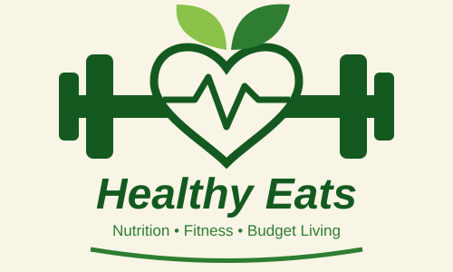
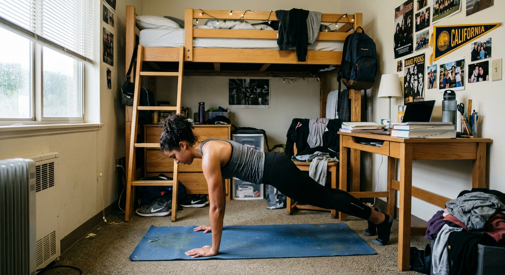

Bodyweight Circuit
- Push-ups
- Squats
- Lunges
- Plank hold
Do each move for 30 seconds, rest 30 seconds, and repeat the round 3 times.

Healthy habits, affordable meals, and smart tips for a better college life.
College gets busy fast, and exercise is usually the first thing to go. The good news is that you do not need a gym or expensive equipment. The CDC suggests adults get about 150 minutes of moderate activity each week, and that can be broken into short sessions in your dorm, on campus, or outside.
Do each move for 30 seconds, rest 30 seconds, and repeat the round 3 times.
Ten minutes after studying helps your body loosen up and your mind slow down.
Free, easy to fit into your day, and a good way to meet people.
| Day | Activity | Time | Notes |
|---|---|---|---|
| Monday | Bodyweight circuit | 20 min | Start the week strong |
| Tuesday | Brisk walk | 30 min | Walk between classes |
| Wednesday | Stretch & reset | 15 min | Good midweek break |
| Thursday | Bodyweight circuit | 20 min | Add one extra round |
| Friday | Campus cardio | 30 min | Jog or play a game |
| Saturday | Active fun | 45 min | Sports, dancing, or a hike |
| Sunday | Rest day | ——— | Recovery matters too |

You can get a good workout in a small space.
Click a topic to open it.
Read more at the Sleep Foundation, or the National Institute of Mental Health.
This page shares general tips and is not medical advice. Talk to a doctor before starting a new exercise plan.